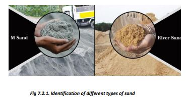
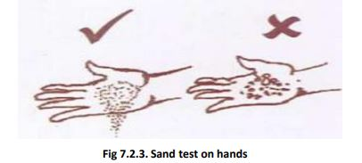

• Use sand obtained from clean rivers or approved pits.
• Store sand on a clean platform so that soil and dirt does not enter into the sand.
• Use clean sand free from pieces of grass, sticks, soil and other debris. If you find some of these here and there in the sand, sieve/wash the sand to remove all impurities.
• A good quality dry sand does not soil your hands and falls freely from hand.
• Always measure sand by using a standard measuring box.
● The size of sand particles should be bigger than grains of ‘Sujee’ but not bigger than crystals of sugar.
